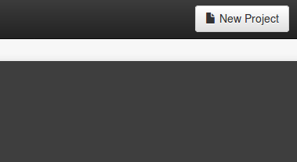
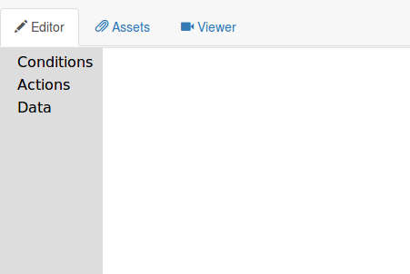
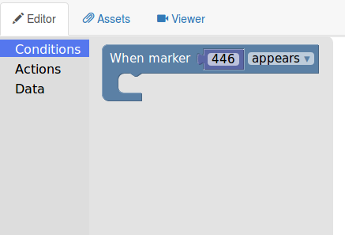
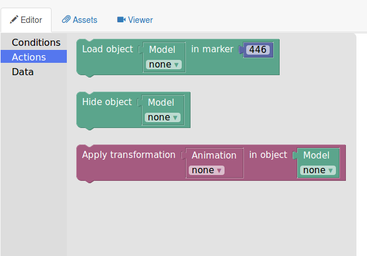
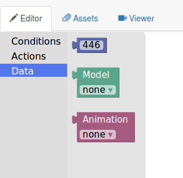
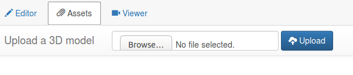
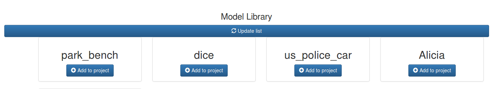
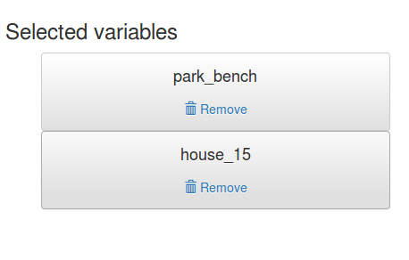
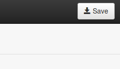
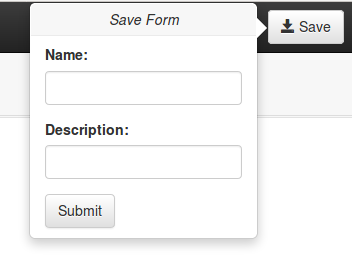

Introduction

is an Online Authoring Tool with graphical interface for the creation of Augmented Reality content.
Augmented Reality is achieved though the renderization of 3D models on top of the live video feed from the device's camera.
To interact with the AR content, we use a set of specific markers, each associated with a numeric code.
When positioned in front of the camera, they'll trigger the specific behaviour assigned to them in the editor.
How to
Create a New Project

When the user hits the New Project button, the Editor will open:

Once in the editor, in the first tab (Editor) the user can start dragging blocks in the canvas to define the behaviour of the AR application.
Blocks are divided in three categories:
The first one is CONDITIONS
These are the blocks that determin the triggers that start some behaviour...
For example, if a marker appears, disapperas, modes, or rotates...
The second one is ACTIONS
These are the blocks that define the behaviours asociated to each trigger.
More than one behaviour can be associated to a single trigger.
They allow loading a 3D model, hiding it, applying some animation to it, etc...
The third one is DATA
These are the blocks thatdefine the contents (markers, models, animations...) that will be used in the AR application.
It's important to remember that for a new model to appear in the dropdown list, a new Model block has to be created, as already created blocks won¡t update their list.
The Assets tab
Allows to manage the models used in the application.
The first menu allows the user to upload a new JSON model to the server.
The model has certain requirements to be valid:
* It MUST be in a zip file with a folder of the same name inside.
* Within the folder, there must be a ".json" file of the same name, and all the textures.

Once uploaded, the user must press the "Update List" button to refresh the model library.
In the library, the user can add any model to the project, and they will appear in the dropdown list of any new "Model" blocks.

When they're added, models appear in the left menu.
Pressing the "Remove" button will remove the model from any new "Model" blocks.
Once the user has finished editing the project, it can be saved to the Project Library.
This is achieved by pressing the "Save" button in the top right corner.
Then a form will appear, for the user to input all relevant data that will be shown in the library.
Once completed, hitting the "Submit" button will send the project to the Project Library.